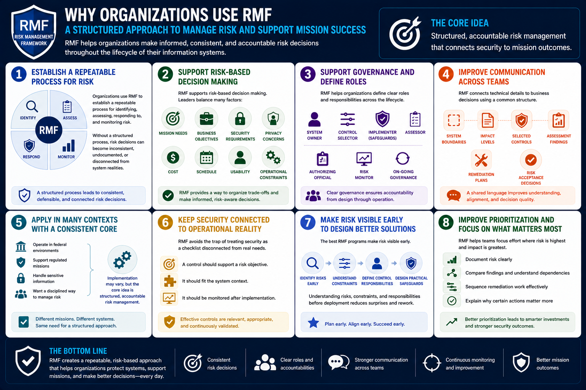

What Is RMF?
Why Organizations Use RMF
Connecting to LMS... Progress: in progress
Version 1.0 | Date: 2026-06-16 | Educational overview of Risk Management Framework concepts.

Narration
Organizations use RMF to establish a repeatable process for identifying, assessing, responding to, and monitoring risk. Without a structured process, risk decisions can become inconsistent, undocumented, or disconnected from system realities.
RMF supports risk-based decision making. Leaders often need to balance mission needs, business objectives, security requirements, privacy concerns, cost, schedule, usability, and operational constraints. RMF provides a way to organize that decision.
The framework also supports governance. It helps organizations define who owns systems, who selects controls, who implements safeguards, who assesses effectiveness, who authorizes operation, and who monitors risk over time.
RMF can improve communication between teams. Technical details become easier to connect to business decisions when they are expressed as system boundaries, impact levels, selected controls, assessment findings, remediation plans, and risk acceptance decisions.
Organizations may use RMF because they operate in federal environments, support regulated missions, handle sensitive information, or simply want a disciplined way to manage risk. The exact implementation may vary, but the core idea is structured, accountable risk management.
RMF also helps avoid the trap of treating security as a checklist detached from operational reality. A control should support a risk objective, fit the system context, and be monitored after implementation.
The best RMF programs make risk visible early. When risks, constraints, and control responsibilities are understood before deployment, teams have a better chance to design practical safeguards and avoid last-minute surprises.
RMF can also improve prioritization. When risk is documented clearly, teams can compare findings, understand dependencies, sequence remediation work, and explain why certain actions matter more than others.